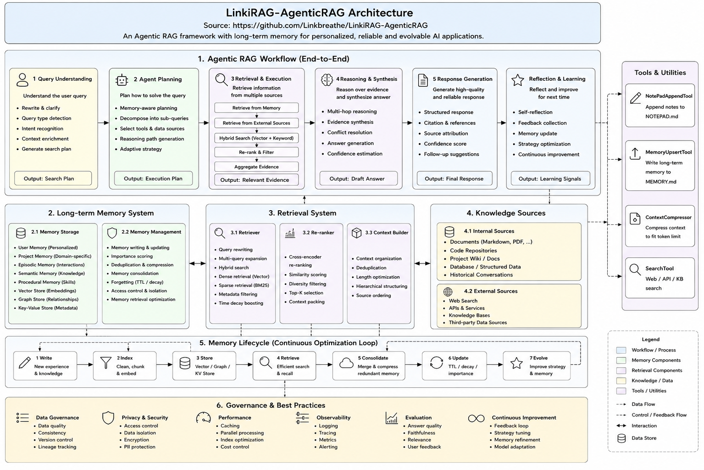
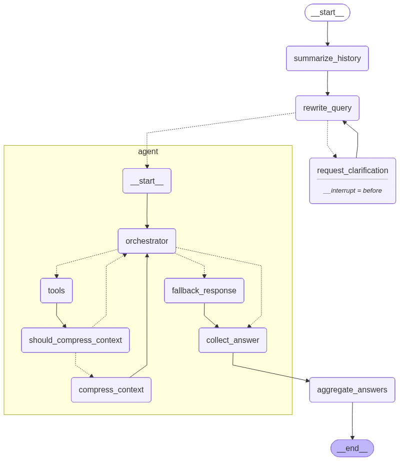
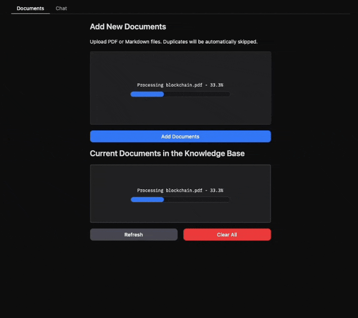

AI · Independent project · Open source · 2026
Linki · Adaptive Agentic RAG
An evidence-grounded assistant that spends compute only when a question needs it — and makes the quality, cost, and uncertainty of that decision visible.
Role
System design · implementation · evaluation
Focus
Adaptive routing · evidence integrity · governance
Benchmark
MultiHop-RAG · 609 articles · 2,556 questions
Supervisor
Status
Independent open-source prototype · MIT
01Overview
Linki is a Python 3.12 knowledge assistant built around LangGraph, local FastEmbed models, and Qdrant hybrid search. It answers from verbatim, citation-checked evidence instead of treating a language model’s memory as a source of truth.
The central idea is simple: a greeting should stay cheap, a factual lookup should not need a full agent loop, and a multi-hop or high-risk question should be allowed to buy more planning and verification. A local policy makes that choice before the first model call, with explicit limits and traceable reasons.
The design claim
Adaptive execution is only useful when it is bounded, observable, and held to the same evidence standard as the expensive path.
02Why adaptive RAG
A fixed agentic graph can produce strong answers, but it makes every question pay for planning, grading, verification, and reflow. Linki treats compute as a routing decision: use a bounded amount of work for easy questions, then escalate only when the question or the evidence signals that more work is justified.
Chat
Greetings and simple acknowledgements can answer without retrieval.
0–1 call · 0 evidence tokensRetrieve + answer
One clear factual intent goes directly to a selected knowledge base.
1 call · 1,200 evidence tokensPlan once
Comparison or multi-facet questions receive a small execution plan.
≤3 calls · 2,400 evidence tokensVerify
High-risk, unresolved, or explicitly deep requests can grade and verify.
≤7 calls · 4,000 evidence tokensEvery path carries a maximum call count, input-token budget, evidence budget, round limit, and deadline. If retrieval looks unsafe, a deterministic risk gate can upgrade a short path to P3; it cannot silently continue under the old budget.
03System design
Linki separates the answer workflow from three governed side planes: long-term memory, organizational knowledge, and release-gated self-evolution. This keeps personalization and improvement useful without allowing an inferred preference, model output, or prompt change to become trusted state by accident.

Retrieve
30 dense + sparse child candidates, then local cross-encoder reranking.
Evidence
Verbatim supporting spans retain source version, hash, and character offsets.
Decide
Answer risk chooses accept, verify, warn, or a bounded reflow.

04Evidence & governance
Retrieval is hierarchical: parent chunks preserve enough context for the model, while smaller child chunks provide a high-recall search surface. Dense embeddings and BM25 candidates are merged, reranked locally, deduplicated by parent, and packed under a path-specific token budget.
The answer receives the original supporting spans, never a quietly rewritten version. Each span keeps a content hash and validated offsets into its source. Evidence Packs also enforce source diversity and sub-query coverage; the experimental two-hop PageRank retriever remains an explicit deep-path option because its recall gain comes with a measurable latency cost.
Memory and knowledge follow a stricter lifecycle. Explicit memory can become active, inferred memory begins as a candidate, edits create new versions, and forgetting tombstones content. Organizational claims need a source artifact, a valid source span, schema checks, and explicit approval before they can appear in a published Wiki or graph projection.
Release-gated self-evolution
Feedback and failures become a knowledge-gap backlog. Prompt, policy, and index candidates move through immutable evaluation, deterministic canary buckets, constraint gates, promotion, and rollback.
05Evaluation
The benchmark uses the official MultiHop-RAG corpus: 609 articles, 2,556 questions (2,255 answerable and 301 null), 10,398 parent chunks, and 47,593 child vectors. The formal end-to-end comparison uses 120 stratified questions and 480 system calls with the same main model, judge, corpus, and rotated execution order.
| System | Calls | Mean tokens | p50 latency | p95 latency | Faithfulness | Quality | All-support |
|---|---|---|---|---|---|---|---|
| Fair single pass | 1.00 | 1,654 | 2.403 s | 3.079 s | 4.567 | 3.233 | 0.244 |
| Legacy full graph | 6.92 | 9,222 | 22.426 s | 62.776 s | 4.417 | 3.592 | 0.433 |
| Adaptive auto | 1.26 | 2,440 | 4.138 s | 6.950 s | 4.342 | 4.008 | 0.322 |
| Adaptive deep | 5.23 | 10,262 | 21.106 s | 45.913 s | 4.267 | 3.475 | 0.467 |
Adaptive auto made the system much cheaper and improved judged answer quality and refusal correctness, but strict evidence coverage fell by 0.111. That trade-off is why the release gate remains meaningful.
auto stays on the legacy graph while recording the adaptive choice as shadow_policy.fast, balanced, or deep per request after corpus-specific calibration.
06Reflection
The most useful result is not that one route is always better. It is that the system can make its trade-offs explicit: retrieval can be deterministic while generated claims still drift, graph retrieval can improve recall while making latency worse, and an adaptive path can pass efficiency gates while failing evidence-quality gates.
That is the engineering lesson I wanted the project to hold onto. Adaptive systems should expose their budgets, reasons, evidence, and release state so that “more intelligent” never becomes a synonym for “less inspectable.”
- MultiHop-RAG covers comparison, inference, temporal, and null questions; it does not yet cover the planned single, multi-turn, or cross-KB strata.
- Embedded Qdrant is suitable for the reproducible local run, not a server-capacity claim for the 47,593-vector index.
- Answer-claim Jaccard is lexical sentence overlap, not a semantic entailment score; identical retrieval still produced only 0.6928 claim Jaccard.
07Tech stack
Runtime
Python 3.12, Pydantic, Typer, Rich, python-dotenv, PyYAML, FastAPI, and Uvicorn
Agent graph
LangGraph, LangChain Core, provider adapters, bounded P0–P3 policy, and deterministic risk gates
Retrieval
Qdrant, FastEmbed, BAAI/bge-small-en-v1.5, Qdrant/bm25, local cross-encoder reranking, parent/child chunking, and Evidence Packs
Governance
SQLite, optional Redis, tenant/user/ACL-scoped memory, bitemporal claims, Wiki/graph projections, canary release gates, and rollback
Evaluation
pytest, MultiHop-RAG retrieval and end-to-end protocols, stability runs, telemetry, and provider token usage
Interface
React, TypeScript, Vite, Radix UI, and a FastAPI web console with trace and evidence inspection
# Reproduce the core checks uv run pytest -q linki bench-retrieval --benchmark multihop-rag --variant all linki bench-fair --benchmark multihop-rag --fold-size 40 linki bench-stability --benchmark multihop-rag --limit 120 --repeats 3
Visual materials
08